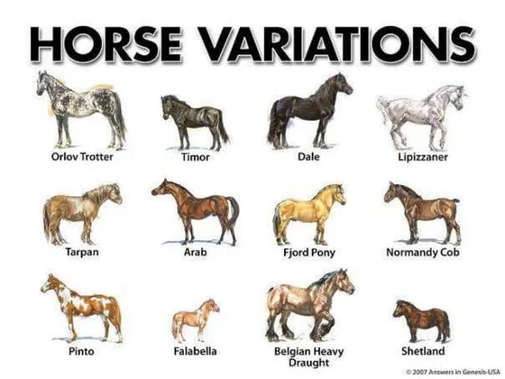

TYPES OF HORSES
There are hundreds of horse breeds found around the world, each uniquely adapted to their local environment and role in human society. Horses vary widely in appearance, size, and conformation, reflecting the particular conditions of their breed characteristics. Some are strong and heavy, ideal for farm work or pulling loads, while others are swift and agile, perfect for racing or equestrian sports. Many of North America’s most popular horse breeds are ones developed in Canada or the United States, while others have European, Asian or South American lineage. Although most North Americans no longer rely on equids for work and transportation, the continent is still home to millions of horses. Modern horse owners primarily use horses for recreation, companionship, and competition. This article will discuss the most popular horse breeds in North America, particularly on Canadian and United States populations.
TYPES OF HORSES